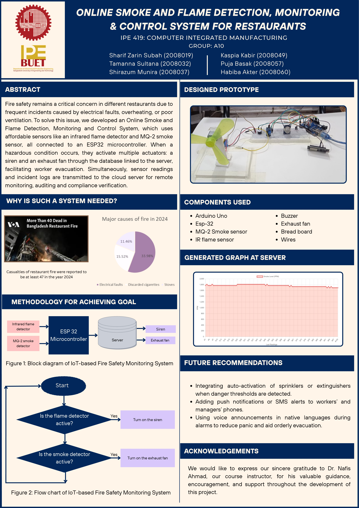

Detect smoke and fire hazards in industrial and storage environments and automatically trigger ventilation and alarm to enhance safety and prevent disasters.
| Device / Component | Quantity | Task / Function |
|---|---|---|
| MQ2 Smoke Sensor | 1 | Detects smoke/gas (analog value, triggers fan above threshold) |
| Flame Sensor | 1 | Detects visible flame (digital output, triggers buzzer) |
| Fan (via Relay) | 1 | Ventilates area when smoke/gas is detected |
| Buzzer | 1 | Alarm if flame detected |
| Arduino Uno | 1 | Main controller |
| ESP8266 | 1 | Uploads data to Firebase |
| Jumper Wires, Power Supply | Several | Connections & Power |

// Define pin numbers
const int mq2Pin = A0; // MQ2 analog output
const int flamePin = 2; // Flame sensor digital output
const int fanPin = 3; // Fan (via relay)
const int buzzerPin = 4; // Buzzer
// Threshold value for smoke/gas (adjust after testing)
const int gasThreshold = 300;
void setup() {
pinMode(mq2Pin, INPUT);
pinMode(flamePin, INPUT);
pinMode(fanPin, OUTPUT);
pinMode(buzzerPin, OUTPUT);
digitalWrite(fanPin, LOW); // Fan initially OFF
digitalWrite(buzzerPin, LOW); // Buzzer initially OFF
Serial.begin(9600); // For debugging
}
void loop() {
int gasValue = analogRead(mq2Pin);
int flameState = digitalRead(flamePin);
// Debug output
Serial.print("Gas Value: ");
Serial.print(gasValue);
Serial.print(" | Flame: ");
Serial.println(flameState);
// Control Fan based on Gas/Smoke level
if (gasValue > gasThreshold) {
digitalWrite(fanPin, HIGH); // Turn ON fan
} else {
digitalWrite(fanPin, LOW); // Turn OFF fan
}
// Control Buzzer based on Flame detection
if (flameState == LOW) {
digitalWrite(buzzerPin, HIGH); // Flame detected (LOW = detected)
} else {
digitalWrite(buzzerPin, LOW); // No flame
}
delay(200); // Small delay to stabilize readings
}